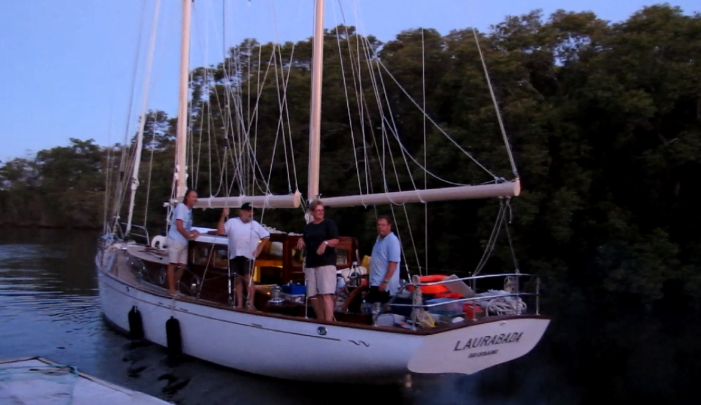
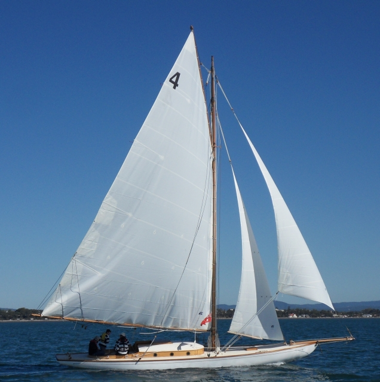
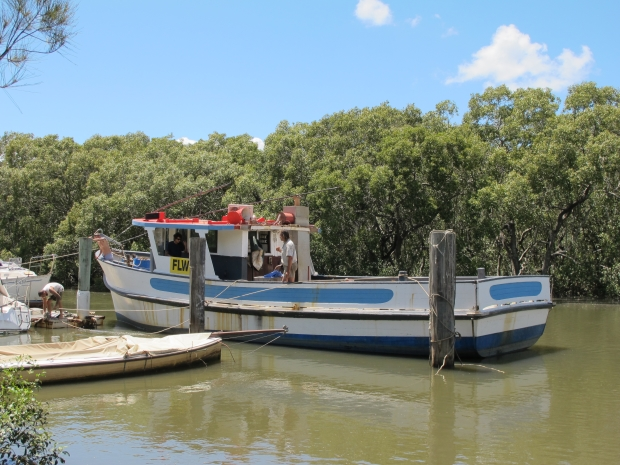
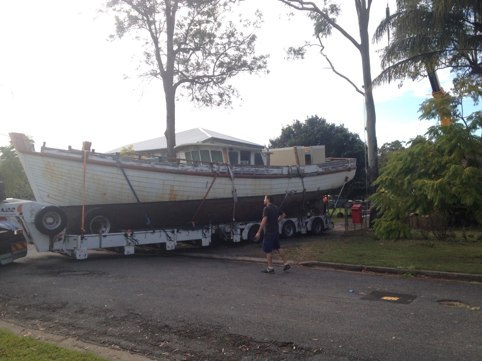

Here at the slipway we have performed a number of large restoration projects. Some of these projects are:
Built in 1952, Laurabada was constructed by the highly respected mariner Ivan "Skipper" Holm in the local Sandgate reigon. The yacht completed 50 consectutive Brisbane to Gladstone Yacht Races, the only boat that has achieved the feat. Now the boat is in the hands of his son, Ivan Holm Jnr.
During 2012, the vessel was brought to Deagon Slipways for a full refit. This included splining and fiberglassing of the hull, the inclusion of a new bow thruster, refurbishment of the original mahogany interior as well as new additions such as a water maker, washing machine and a modern style galley.
Built in 1911, Vanity is a classic Tasmanian One Design yacht that was constructed by boatbuilder Charles Lucas in his Hobart Shipyard, Vanity has passed through various hands over her long lifetime until it was purchased by Rob Virtue in 2005. After transporting the yacht up to Brisbane he decided to have a full refit at the yard.
The refit was completed 2010, after which it was returned to its original home in Hobart, Tasmania. The refit included a complete exterior overhaul, new bow shaped cabin and a completely redesigned interior. All of the timberwork was done in a traditional style using Tasmainian Huon Pine.
The completed boat has performed in many local Hobart yachting events, including being on display at the Wooden Boat Festival.
Rushaway, a Queensland trawler based at Mooloolaba, was purchased 2013 by a Sydney businessman looking to convert it to a classic style pleasure cruiser.
After removing all of the working gear, the trawlers interior was removed and is in the process of being replaced to make it a comfortable family bay cruiser. A new deckhouse and extended roof have been completed with work on the interior to be started in 2015.
Southern Mist is a 50 foot long cray boat that was originally based in Melbourne that has been brought up to Brisbane for conversion into a pleasure cruiser.
Currently the boat is inside of the shed getting completely stripped from the deck down for the restoration to take place.
